Austral Frio: antes e depois
Mesma identidade, mesma porta do baú. Mudaram as fotos fracas e o texto das seções que elas sustentavam. Os prints só comparam: julgue abrindo os dois sites.
Porta do baú
A transição foi mantida sobre a mesma câmara fria. O texto ficou em uma frase e a legenda diz que a foto é ilustrativa.
Computador
Celular
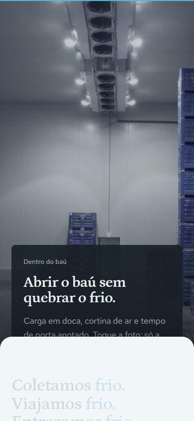
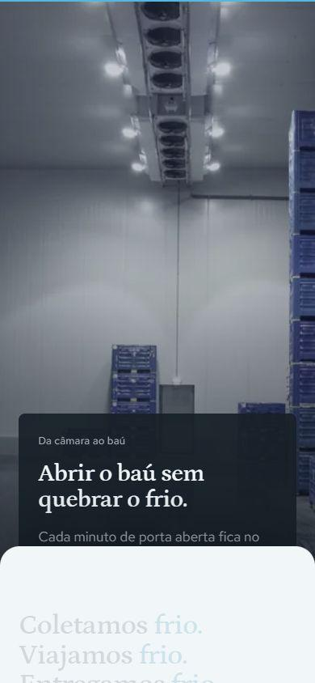
Pátio e estrada
Saiu o semirreboque com marcas desfocadas e céu artificial. Entrou um caminhão baú na estrada, sem marca legível, no mesmo tom frio.
Computador
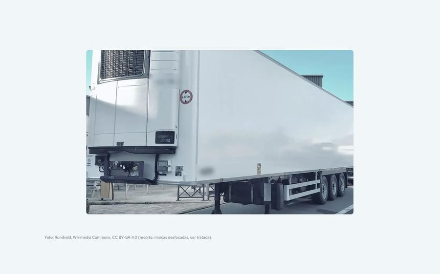
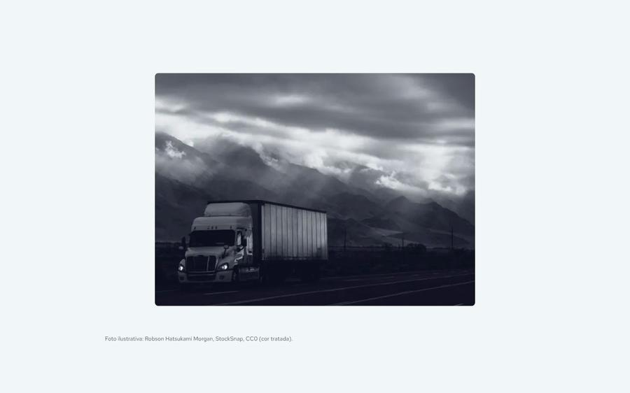
Celular
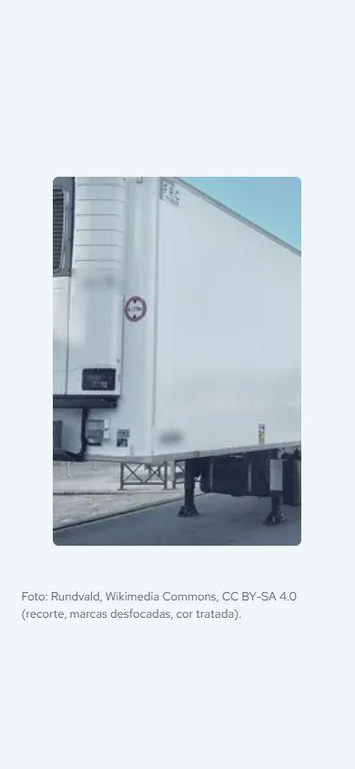
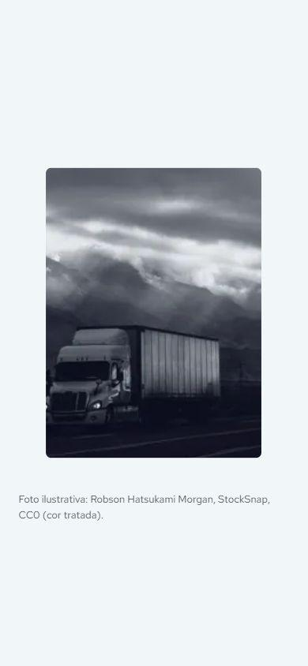
Estrada aberta
A foto ocupa o quadro e o texto diz o que acontece na viagem, sem repetir a seção anterior.
Computador
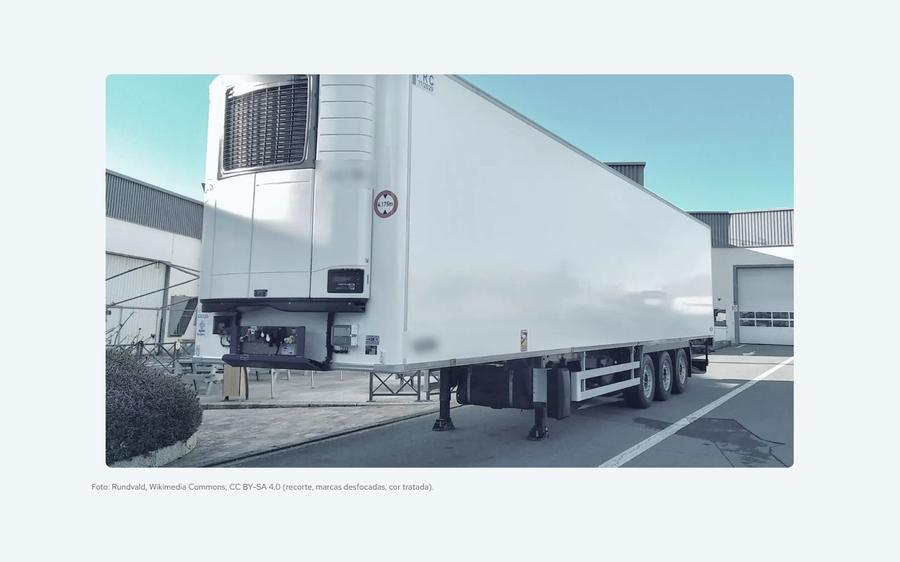
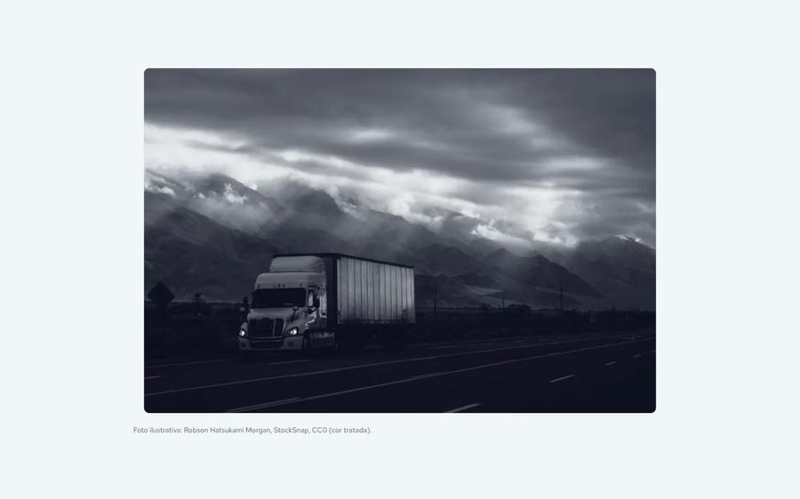
Celular
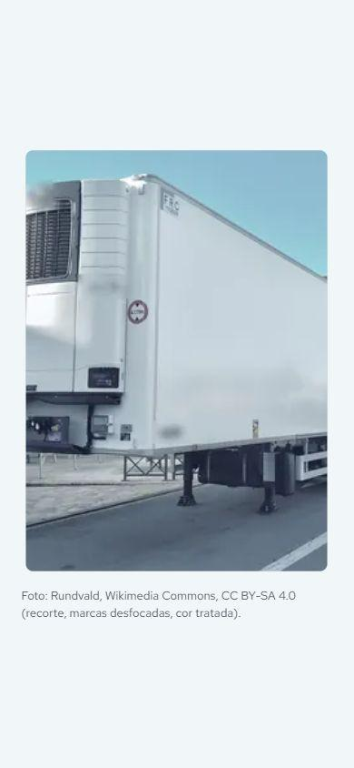
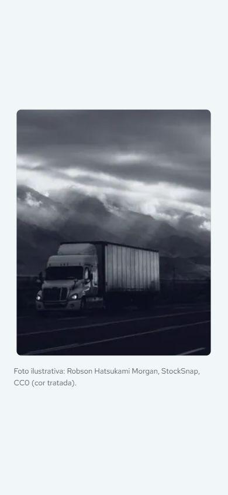
Como cotar
Saiu a foto de lado que só enchia espaço. Ficaram os passos e o prazo de resposta.
Computador
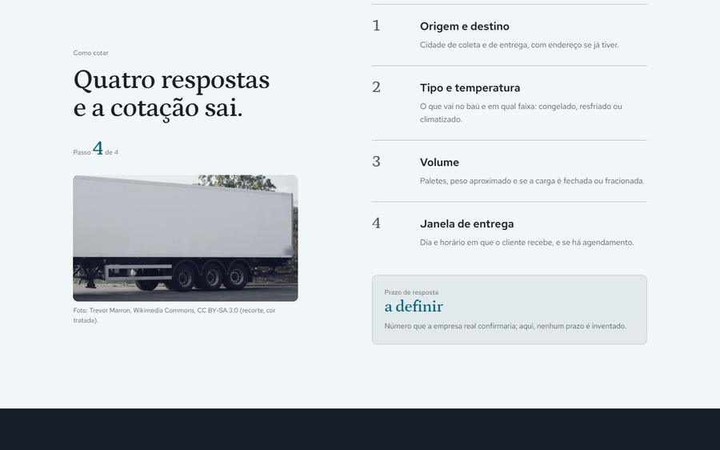
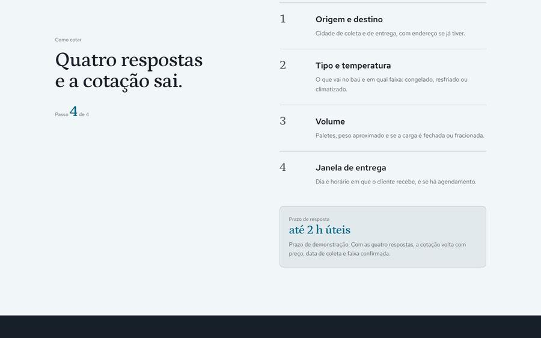
Celular
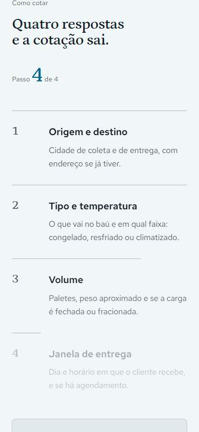
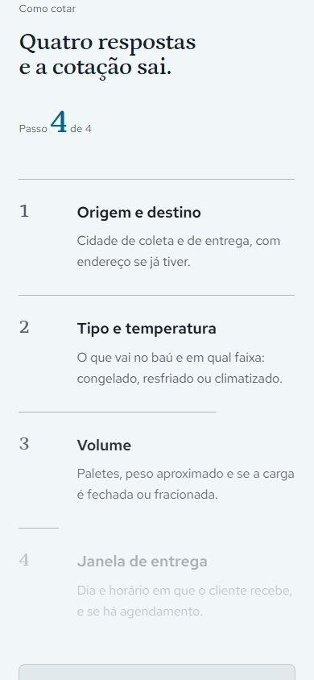